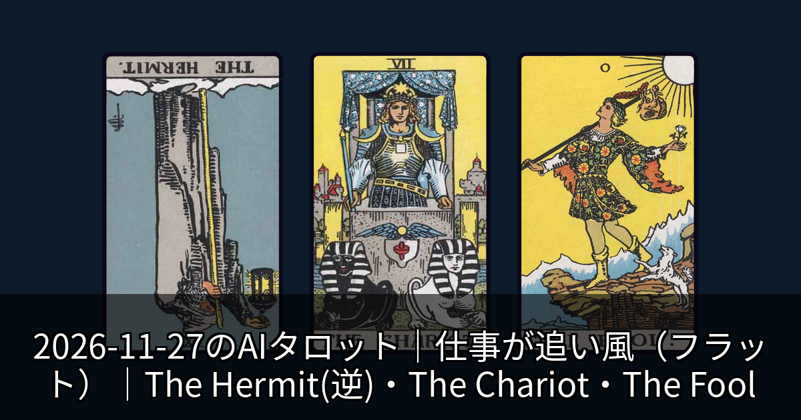

本文
# 2026-11-22のAIタロット｜仕事が追い風（フラット）｜The Fool(逆)・Hanged Man(逆)・Wheel of Fortune(逆) 対象: **全体運**（日付: 2026-11-22） ## 今日のスコア（1〜5） - 恋愛運: **1** ★☆☆☆☆ - 仕事運: **3** ★★★☆☆ - 金運: **3** ★★★☆☆ - 健康運: **1** ★☆☆☆☆ ## 今日のタロット（3枚） - **The Fool**（逆位置） - **Hanged Man**（逆位置） - **Wheel of Fortune**（逆位置） ## ラッキー - 色: **ピンク** - アイテム: **腕時計** ## まとめ 平均2.0（慎重さ大事）。特に『work』が追い風。カード：The Fool（逆）, Hanged Man（逆）, Wheel of Fortune（逆）。 ## 一言アドバイス - **恋愛**: 【love】鍵は「立て直し×献身（課題／逆位置）」。今日は連絡を取るの一歩を。無理せず小休止も忘れずに。 - **仕事**: 【work】鍵は「整える×視点の転換（課題／逆位置）」。今日は約束を守るの一歩を。やり過ぎ注意も忘れずに。 - **金運**: 【money】整える×巡り合わせ（課題／逆位置）が追い風。先取り貯蓄するすると良縁が集まります。やり過ぎ注意を心がけて。 - **健康**: 【health】鍵は「立て直し×流れに乗る（課題／逆位置）」。今日は水分補給を意識するの一歩を。無理せず小休止も忘れずに。 --- ※ 本記事はAI生成のエンタメ占いです。参考程度にお楽しみください。 （タグ）占い / タロット / AI占い / 今日の運勢 / The Fool / Hanged Man / Wheel of Fortune / 仕事運